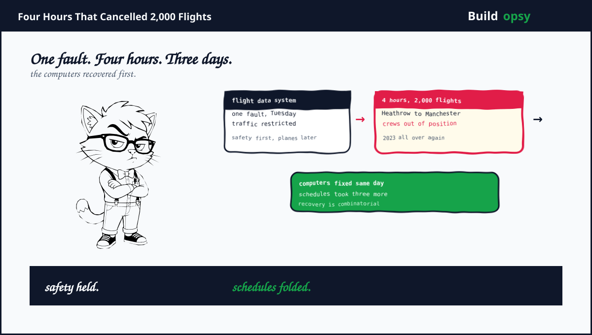
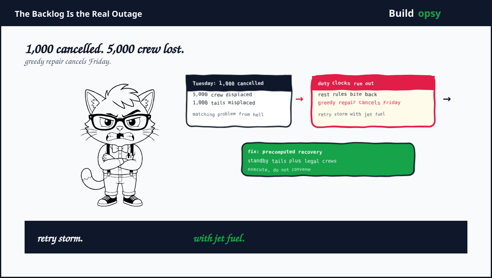

1. Tuesday in Controlled Airspace
September 8. A fault hit the flight data processing environment at NATS, the UK air traffic provider. Controllers did the only safe thing available. They restricted traffic volumes sharply across UK airspace. Safety held. Everything else folded. Heathrow, Gatwick, Stansted, Manchester plus Birmingham bled departures all day. European hubs caught the overflow. Some long-haul flights diverted mid-route.
The scoreboard: more than 1,000 cancellations on day one, over 2,000 across the following days, hundreds of thousands of passengers stranded. Core services returned the same afternoon. Schedules stabilized around September 10. The government ordered an initial explanation within a week. Anyone who remembers August 2023 felt deja vu with extra steps. Same provider. Same flight plan processing layer. Same four-hour shape. Three years apart.
2. Why Four Hours Cost Three Days
Recovery math is combinatorial, not linear. Every cancelled flight strands two things that the next flight needs. The aircraft, which sits at the wrong airport. Plus the crew, which times out under legal duty limits. A morning of cancellations displaces hundreds of aircraft-crew pairs across dozens of airports. Rebuilding the schedule means solving a matching problem under constraints that tighten every hour crews sit idle.
Model it roughly. Take 1,000 cancelled flights on day one. Each cancellation displaces an average crew of 5 plus one aircraft. That is 5,000 crew assignments plus 1,000 tails to reposition. Crews have maximum duty hours, mandatory rest, plus qualification limits per aircraft type. Aircraft need fuel, stands, plus maintenance windows. Reassigning greedily creates illegal pairings that cancel tomorrow's flights. The industry calls the cascade reactionary delay. Engineers would call it a retry storm with jet fuel.
The multiplier lands near 18x. Four hours of restriction produced roughly 72 hours of degraded schedules. That ratio is the number NATS redundancy planning must answer. Server failover measured in minutes is irrelevant when schedule recovery is measured in days. The bottleneck was never the flight data system. It was the combinatorial aftermath. Controllers protect safety by restricting flow. Nobody owns restricting the backlog.
Compensation math sharpens the incentive. European passenger rules pay hundreds of euros per cancelled seat on airline-caused disruption, with technical faults in ATC sitting in a contested middle ground airlines still price as risk. Take 200,000 affected passengers at a modeled 300 euros average exposure. That is 60 million euros of contingent liability from a four-hour fault. Redundant flight data processing starts looking cheap around the second zero.
3. The 2023 Rehearsal Nobody Rehearsed

August 2023 rhymes on purpose. A flight plan processing fault restricted the same sky plus cancelled roughly the same number of flights. Same provider. Same layer. Same four-hour shape. The industry promised a full review plus a hardened architecture. Three years later the fault returned to the same address. Either the hardening never shipped or it hardened everything except the component that failed twice. Both readings indict the follow-through.
The mechanics deserve precision because restriction looks like panic from outside. En-route sectors accept a fixed number of aircraft per hour. Flight data processing feeds the sector load prediction that sets those rates. When the feed becomes untrustworthy, controllers cannot verify separation minima, so they shed load by capping flow rates hard. The caps propagate to the Eurocontrol network manager, which redistributes slots across the continent. Every downstream airport inherits delay it did not cause. Restriction is not panic. It is the only safe default when the system loses its own state. The scandal is not that controllers restricted flow. The scandal is that one fault forced them to.
Hot standby math makes the repeat harder to forgive. Shadowing live traffic through a second processing environment roughly doubles the compute cost of one subsystem. That subsystem is a fraction of the NATS technology budget, itself a fraction of the 60 million euro exposure modeled above. The industry paid for the backup in cancelled seats, several times over, across two incidents. Finance approved the risk twice. Passengers paid twice.
Four hours that cancelled 2,000 flights is where the 15-lesson system design course begins, with diagrams, calculators plus interview questions all the way down. Take Lesson 01 →
4. What Went Wrong in the Design
One processing environment gated the whole sky. Traffic restriction was the correct safe response, which proves the fault sat on the critical path with no live alternate. Safety-critical systems need hot standby for the exact component whose failure forces restriction. Cold backup restores computers. Hot standby preserves schedules.
2023 taught nothing durable. The August 2023 incident had the same shape, same layer, same restriction response. Three years later the architecture still converts one fault into national restriction. Postmortems that do not change topology are memoirs. This one needs a second data path, not a second report.
Recovery planning stopped at system restore. Core services returned Tuesday afternoon. Nobody had a schedule-rebuilding playbook with precomputed crew repositioning, standby aircraft staging, or slot renegotiation automation. Restore the computers is step one of twenty. Steps two through twenty were improvised.
Contingency lived in manual procedures. Flow restriction, slot coordination across Europe, plus airline rebooking all ran on human coordination at the worst possible hour. Manual contingency scales with staffing, not with disruption size. A 2,000-flight backlog needs algorithmic recovery support, not heroic shift managers.
5. What Should Happen Instead
First, duplicate the flight data path hot. Two independent processing environments with live traffic shadowing. Automatic cutover on fault detection. The cost is a second stack plus constant reconciliation. The alternative is priced above in cancelled flights.
Second, precompute recovery playbooks. Model crew-plus-aircraft repositioning for restriction scenarios of 1, 4, plus 12 hours. Store standby assignments. When restriction lifts, execute instead of convene. Recovery speed is a design output, not a morale output.
Third, isolate the blast radius by airspace sector. If one processing fault must restrict flow, restrict the smallest possible volume first plus expand only on evidence. All-or-nothing restriction converts a fault into a national event by default.
Fourth, automate slot renegotiation with European flow control. Manual coordination across borders during a backlog is slow plus inconsistent. Machine-readable slot offers with airline priority rules clear backlogs in hours instead of days.
Fifth, publish the redundancy proof annually. Which components are hot standby. Last failover drill date. Measured cutover time. Safety-critical infrastructure should report resilience like financial audits. Trust, but verify with timestamps.

6. The Verdict
NATS did the safe thing on Tuesday. Restricting traffic with a faulty data system is correct airmanship. Safety was never compromised. Credit belongs there. Everything after the restriction is the actual postmortem. A repeat of 2023 with the same topology means the first postmortem changed paperwork, not architecture.
The lesson travels beyond aviation. Every system has a recovery multiplier. Four hours of database downtime is never four hours of business impact. Backlogs, displaced workers, expired credentials plus broken sessions multiply the outage long after the dashboard turns green. Design for the backlog. Fund the hot standby. Drill the recovery. Or schedule the same incident three years out. The sky will wait. Passengers will not.
Four hours of fault. Three days of backlog. The restriction was safe. The repeat was optional.
The government review lands within a week. It will order one of two things. A second data path with a drill schedule attached, or a second report for the shelf next to the 2023 one. The fault does not care which. It is already waiting for the next Tuesday. The only open question is whether the sky will be ready. Watch this space.
Sources and Method
This postmortem follows aviation reporting on the September 8 2026 NATS restriction plus the government review order. Root cause details are pending official disclosure. Schedule math is modeled from published cancellation counts.